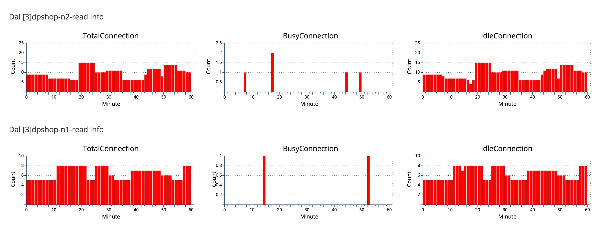

用户端监控文档
a).从用户端角度来看点评的业务接口状态，这是一个端到端的监控，能最早的发现用户端出现问题，比如根本访问不到点评，某城市延迟很大等。
b).用户端的监控目前能监控Ajax接口，页面Page不能监控到。
c).一般一个应用会监控1-2个重要接口，后端实时分析会按照城市、运营商维度做一些聚合分析。
外部监控API文档
用途：提供外部监控的Http接口，用于监控用户端的错误信息。
1、为了保留以后的扩展性，移动端和Web端的暂定用不同的API接口。
2、公网IP，已经提交申请，后续我补充下。
3、【电信，暂使用此IP】CTC: 114.80.165.63，文档后面{ip}使用这个。
4、【网通，暂时不使用】CNC: 140.207.217.23
Web单次接口
http://{ip}/broker-service/api/single
参数说明
| query名 | 实际名称 | 描述 | 类型 |
|---|---|---|---|
| v | version | API版本号 | 暂定为1 |
| ts | timestamp | 发生时间 | long型，1970到现在的毫秒数 |
| tu | targetUrl | 调用的URL或API | String |
| d | duration | 访问耗时 | long 毫秒 |
| hs | httpStatus | httpStatus | 整型 |
| ec | errorCode | ErrorCode | 整型，如果没有的话，传空 |
| code名称 | code含义 |
|---|---|
| -100 | 如果当前没有连接，不能连接到网络 |
| -107 | 回传的数据格式出错 |
| -901 | 当数据发送之后，500ms 之内没有收到 header |
| -902 | 当收到header 和 httpstatus 之后，500ms 之内没有开始下载 |
| -903 | 当开始 loading 之后，500ms 之后仍然没有传送完毕 |
| -904 | 实际上不会出现这个 code，因为 readyState 置 4 之后就成功了 |
| -905 | 响应体的类型不符，比如 JSON.parse 失败 |
| -910 | 业务超时，当业务代码中设置了 timeout 以后，触发了超时 |
| -911 | 当业务代码中触发了 cancel 方法后，触发的 ajax 取消，有可能由业务逻辑所致，而不是错误。 |
| >0 | 业务 code |
ec 参数
今后 ec 参数仅仅是用来标识 response json 中的 code 值
APP用户访问批量接口
http://{ip}/broker-service/api/batch
批量接口POST内容，前面加上“v=2&c=”(v=1已遗弃)，不同请求之间用回车ENTER分隔，字段之间用TAB分隔。
| 实际名称 | 描述 | 类型 |
|---|---|---|
| timestamp | 发送数据时的时间戳 | long |
| network | 2G,3G,4G,WIFI(iOS只有3G和WIFI)，1=wifi, 2=2G, 3=3G, 4=4G, 0=Unknown | int |
| version | versionCode,比如6.8=680,只支持int类型 | int |
| tunnel | 0 or 1，默认是0表示短连接，1表示是长连 | int |
| command | 接口，一般为url path的最后一个单位(shop.bin) | String |
| code | status code,建议区分http的返回码,比如>1000为业务错误码, <1000为网络错误码,<0为自定义错误码 | int |
| platform | android=1,ios=2,Unknown=0 | int |
| requestbyte | 发送字节数 | int |
| responsebyte | 返回字节数 | int |
| responsetime | 用时 (毫秒） | int |
单个请求格式如下 timstampTABnetworkTABversionTABtunnelTABcommandTABcodeTABplatformTABrequestbyteTABresponsebyteTABresponsetimeENTER
POST内容如果有如下5个请求，Sample的POST内容为，
v=2&c=不需要做urlencode，后面的批量的content部分需要urlencode。
v=2&c= 1400037748152\t1\t680\t1\tshop.bin\t200\t1\t100\t100\t200\n 1400037748163\t1\t680\t1\tshop.bin\t200\t2\t120\t110\t300\n 1400037748174\t1\t680\t1\tshop.bin\t200\t3\t110\t120\t200\n 1400037748185\t1\t680\t1\tshop.bin\t200\t1\t120\t130\t100\n 1400037748196\t1\t680\t1\tshop.bin\t500\t2\t110\t140\t200\n
APP加载速度批量接口
http://{ip}/broker-service/api/speed
批量接口POST内容，前面加上“v=1&c=”，不同请求之间用回车ENTER分隔，字段之间用TAB分隔。
| 实际名称 | 描述 | 类型 |
|---|---|---|
| timestamp | 发送数据时的时间戳 | long |
| network | 2G,3G,4G,WIFI (iOS只有3G和WIFI) | int |
| version | versionCode, eg. 6.8 = 680 | int |
| platform | android=1 or ios=2 | int |
| page | 加载页面，eg. index.bin | String |
| step1-responseTime1 | 页面加载第1阶段及延时，eg. 1-300 | String,responseTime单位为毫秒 |
| step2-responseTime2 | 页面加载第2阶段及延时，eg. 1-300 | String,responseTime单位为毫秒 |
| ....... | 页面加载阶段及延时，eg. 1-300 | String,responseTime单位为毫秒 |
| stepN-responseTimeN | 页面加载第N阶段及延时，eg. 1-300 | String,responseTime单位为毫秒 |
单个请求格式如下: timstampTABnetworkTABversionTABplatformTABpageTABstep1-responseTime1TABstep2-responseTime2TABstep3-responseTime3ENTER
POST内容如果有如下5个请求，Sample的POST内容为
v=1&c= 1400037748152\t1\t680\t1\tpage1\t1-20\t2-30\t3-40\t4-50\n 1400037748163\t1\t680\t1\tpage2\t1-20\t2-30\t3-40\t4-50\n 1400037748174\t1\t680\t1\tpgae3\t1-20\t2-30\t3-40\t4-50\n 1400037748185\t1\t680\t1\tpage4\t1-20\t2-30\t3-40\t4-50\n 1400037748196\t1\t680\t1\tpage5\t1-20\t2-30\t3-40\t4-50\n
APP Crash日志接口
http://{ip}/broker-service/api/crash
| 参数名 | 描述 | 类型 |
|---|---|---|
| mt | 手机类型，andriod传入1，ios传入2 | int |
| av | APP的版本号，比如1.0.0 | String |
| pv | 平台版本，比如7.0.1 | String |
| m | 模块名，支持模块区分 | String |
| msg | crash的简单原因，后续统计根据msg进行分类，比如NullPointException | String |
| l | 错误等级，默认值可以传warning、error可以用来进行错误区分 | String |
| d | 详细的错误日志 | String |
参数可以post上来，需要对value进行encode。
如下手机类型是ios，app版本号1.1，平台版本号1.2，模块是user，错误等级为error，错误原因为java.npe
http://{ip}/broker-service/api/crash?mt=2&av=1.1&pv=1.2&m=user&msg=java.npe&l=error&d=dddddsfsdfsdfsdf
APP 长连访问批量接口
http://{ip}/broker-service/api/connection
批量接口POST内容，前面加上“v=3&c=”，不同请求之间用回车ENTER分隔，字段之间用TAB分隔。
| 实际名称 | 描述 | 类型 |
|---|---|---|
| timestamp | 发送数据时的时间戳 | long |
| network | 2G,3G,4G,WIFI(iOS只有3G和WIFI)，1=wifi, 2=2G, 3=3G, 4=4G, 0=Unknown | int |
| version | versionCode,比如6.8=680,只支持int类型 | int |
| tunnel | 固定为1，表示是长连 | int |
| command | 接口，一般为url path的最后一个单位(shop.bin) | String |
| code | status code,建议区分http的返回码,比如>1000为业务错误码, <1000为网络错误码,<0为自定义错误码 | int |
| platform | android=1,ios=2,Unknown=0 | int |
| requestbyte | 发送字节数 | int |
| responsebyte | 返回字节数 | int |
| responsetime | 用时 (毫秒） | int |
单个请求格式如下 timstampTABnetworkTABversionTABtunnelTABcommandTABcodeTABplatformTABrequestbyteTABresponsebyteTABresponsetimeENTER 新版本加入了接入点IP
POST内容如果有如下5个请求，Sample的POST内容为，
v=2&c=不需要做urlencode，后面的批量的content部分需要urlencode。
v=3&c= 1400037748152\t1\t680\t1\tshop.bin\t200\t1\t100\t100\t200\n 1400037748163\t1\t680\t1\tshop.bin\t200\t2\t120\t110\t300\n 1400037748174\t1\t680\t1\tshop.bin\t200\t3\t110\t120\t200\n 1400037748185\t1\t680\t1\tshop.bin\t200\t1\t120\t130\t100\n 1400037748196\t1\t680\t1\tshop.bin\t500\t2\t110\t140\t200\n
JS 错误接口
http://{ip}/broker-service/api/js
参数说明
| query名 | 实际名称 | 描述 | 类型 |
|---|---|---|---|
| v | version | API版本号 | 暂定为1 |
| timestamp | timestamp | 发生时间 | long型，1970到现在的毫秒数 |
| error | error | 错误的类型 | String |
| file | file | 错误的发生的js文件 | String |
| url | url | 错误的发生的html页面 | String |
| line | line | 错误的行数 | int |
| data | data | data类型 | String，如果没有的话，传空串 |
CDN监控接口
http://{ip}/broker-service/api/cdn 批量接口POST内容，前面加上v=1&c=，不同请求之间用回车
ENTER分隔，字段之间用TAB分隔。
timstampTABtargetUrlTABdnslookupTABtcpconnectTABrequestTABresponseENTER sample如下: v=1&c= 1400037748182TABcdn-resource1TAB300TAB200TAB300TAB300ENTER 1400037748182TABcdn-resource2TAB300TAB200TAB300TAB300ENTER 1400037748182TABcdn-resource3TAB300TAB200TAB300TAB300ENTER
参数说明
| 实际名称 | 描述 | 类型 |
|---|---|---|
| v | API版本号 | 暂定为1 |
| c | 具体内容 | content内容 |
content内容说明
timstampTABtargetUrlTABdnslookupTABtcpconnectTABrequestTABresponseENTER
| 实际名称 | 描述 | 类型 |
|---|---|---|
| timestamp | 发生时间 | long型，1970到现在的毫秒数 |
| targetUrl | 具体的cdn资源 | cdn资源的一个定义 |
| dnslookup | dns寻址时间 | int |
| tcpConnect | tcp连接建立 | int |
| request | 请求时间 | int |
| response | 接受时间 | int |
URL规则配置 链接
| ID | 描述 |
|---|---|
| 唯一ID | 不能有特殊字符，仅限于英文字母和- |
| 所属组 | 分析时不起作用，仅仅用作url的分组，用于展示目的 |
| Pattern名 | 支持完全匹配方式，比如http://m.api.dianping.com/searchshop.api， 部分匹配，比如 http://www.dianping.com/{City}/food，{City}可以匹配任何字符串 |
APP监控报表获取
Cat支持其它系统通过调用HTTP API来获取APP监控报表数据（JSON格式）
http请求方式: GET或者POST http://主机域名:端口/cat/r/app?
参数说明
| 参数 | 说明 |
|---|---|
| op | linechartJson[查看API访问趋势、运营活动趋势]、piechartJson[查看访问量分布] 必需 |
| 其他参数 | 参考端到端APP监控文档，除了op参数不同，其他均相同，可直接复用 必需 |
url示例（红色部分为不同参数，没有op则需要添加，其他参数相同）
http://cat.dianpingoa.com/cat/r/app?op=view&query1=2014-10-28;1;;;;;;;;;&query2=&type=request&groupByField=&sort=&domains=default&commandId=1&domains2=default&commandId2=1 为APP监控查看的URL链接 则获取报表的URL为： http://cat.dianpingoa.com/cat/r/app?op=linechartJson&query1=2014-10-28;1;;;;;;;;;&query2=&type=request&groupByField=&sort=&domains=default&commandId=1&domains2=default&commandId2=1
WEB监控报表获取
Cat支持其它系统通过调用HTTP API来获取WEB监控报表数据（JSON格式）
http请求方式: GET或者POST http://主机域名:端口/cat/r/web?
参数说明
| 参数 | 说明 |
|---|---|
| op | json 必需 |
| 其他参数 | 参考端到端WEB监控文档，除了op参数不同，其他均相同，可直接复用 必需 |
url示例（红色部分为不同参数，没有op则需要添加，其他参数相同）
http://cat.dianpingoa.com/cat/r/web?op=view&url=s1-small-dnsLookup&group=cdn-s1&city=上海市-&type=info&channel=&startDate=2014-10-28%2016:00&endDate=2014-10-28%2019:00 为APP监控查看的URL链接 则获取报表的URL为： http://cat.dianpingoa.com/cat/r/web?op=json&url=s1-small-dnsLookup&group=cdn-s1&city=上海市-&type=info&channel=&startDate=2014-10-28%2016:00&endDate=2014-10-28%2019:00
Heartbeat的扩展接口
监控单台机器内的一些数据指标，cat按照一分钟的粒度进行上报，服务端统一做展示。
适用场景
1,监控当前一个业务线程状态
2,监控jvm内部一个队列长度
3,监控jvm当前数据库连接数等
4,监控业务内部一个技术指标等
例子
结果展示
cat服务端会将一个extension id作为一个group，然后将每个key指标都会做图形处理，结果会在cat的heartbeat中进行展示如下 变更监控文档
记录及展示变更内容
HTTP API调用方式
接口调用请求说明(插入数据)
http请求方式: GET或者POST http://主机域名:端口/cat/r/alteration?
参数说明
| 参数 | 说明 |
|---|---|
| op | 执行操作 必需[唯一值：insert] |
| type | 变更类型 必需[可能值：puppet, workflow, lazyman] |
| title | 变更标题 必需 |
| domain | 变更项目 必需 |
| hostname | 变更机器域名 必需 |
| alterationDate | 变更时间 必需[格式如：2014-03-30 00:00:00] |
| user | 发起变更用户 必需 |
| content | 变更内容 必需 |
| group | 变更组别 可选 |
| ip | 变更机器ip 可选 |
| url | 变更连接 可选 |
url示例（get方式）
http://主机域名:端口/cat/r/alteration?op=insert&type=puppet&title=2&domain=3&hostname=1&alterationDate=2013-02-19%2000:00:00&user=5&content=6&group=&ip=&url=
返回说明
{"status":200} ——> 成功 {"status":500, "errorMessage":"lack args"} ——> 失败 [必需参数不全] {"status":500} ——> 失败 [其它错误]
告警Http API
Cat支持其它系统通过调用HTTP API来发送信息。目前支持三种发送渠道：邮件、短信、微信（需要邮箱和“爱点评”微信订阅号绑定）
http请求方式: GET或者POST http://主机域名:端口/cat/r/alert?
参数说明
| 参数 | 说明 |
|---|---|
| op | 执行操作 必需[唯一值：alert] |
| channel | 渠道类型 必需[可能值：mail, sms, weixin] |
| title | 告警标题 必需 |
| content | 告警内容 短信可选，邮件、微信必需 |
| group | 告警组名 微信必需，短信、邮件可选 |
| type | 告警类型 必需[可能值：network, business, exception, system, thirdParty, frontEndException] |
| receivers | 接收人 必需[邮箱地址或者手机号；如有多个接收人，用半角逗号分割] |
url示例（get方式）
http://cat.dianpingoa.com/cat/r/alert?op=alert&channel=mail&title=test&content=testcontent&group=cat&type=test&receivers=leon.li@dianping.com
返回说明
{"status":200} ——> 成功 {"status":500, "errorMessage":"lack receivers"} ——> 失败 [接收人receivers未填写或者格式错误] {"status":500, "errorMessage":"send failed, please check your channel argument"} ——> 失败 [渠道channel错误，请指定mail,sms,weixin三者中的一种渠道] {"status":500, "errorMessage":"send failed, please retry again"} ——> 失败 [发送异常]
HTTP API调用方式
CAT接口调用请求说明
http请求方式: GET（请使用http协议） http://cat.dianpingoa.com/cat/r/monitor?
参数说明
| 参数 | 说明 |
|---|---|
| group | 监控组唯一ID名称，必需，仅仅包括字母、数字，不能包含特殊字符，比如引号，冒号等。建议TuanGou这类命名方式 |
| domain | 应用唯一ID名称，必需，仅仅包括字母、数字，不能包含特殊字符，比如引号，冒号等。建议用TuanGouWeb这类命名方式 |
| key | 监控业务唯一ID名称，必需，仅仅包括字母、数字，不能包含特殊字符，比如引号，冒号等。建议用PayCount这类命名方式 |
| timestamp | 时间戳,必需，仅仅为数字。如果缺失，选取服务器当前时间 |
| op | sum，avg，count[默认] |
| count | op=count时所需，默认为1 |
| sum | op=sum时所需，默认为0 |
| avg | op=avg时所需，默认为0 |
1).op = count时，用于记录一个指标值出现的次数
http://cat.dianpingoa.com/cat/r/monitor?timestamp=1404815988&group=myGroup&domain=myApp&key=myKey&op=count
2).op = avg时，用于记录一个指标出现的平均值
http://cat.dianpingoa.com/cat/r/monitor?timestamp=1404815988&group=myGroup&domain=myApp&key=myKey&op=avg&avg=500
3).op = sum时，用于记录一个指标出现的总和
http://cat.dianpingoa.com/cat/r/monitor?timestamp=1404815988&group=myGroup&domain=myApp&key=myKey&op=sum&sum=500
4).op = batch时，用于批量提交指标。（TAB、ENTER分别是制表符和换行符）
http://cat.dianpingoa.com/cat/r/monitor?op=batch&batch=groupTABdomainTABkeyTABtypeTABtimeTABvalueENTER groupTABdomainTABkeyTABtypeTABtimeTABvalueENTER
返回说明
{"statusCode":"-1","errorMsg":"Unknown [ domain,group,key ] name!"} ——> 失败 [必需参数缺失] {"statusCode":"0"} ——> 成功
告警API
Cat支持其它系统通过调用HTTP API来添加告警信息
http请求方式: GET或者POST http://主机域名:端口/cat/r/alert?
参数说明
| 参数 | 说明 |
|---|---|
| op | 执行操作 必需[只能为insert] |
| domain | 告警项目名 必需 |
| level | 告警级别 可选，默认为warning |
| category | 告警类型 可选，默认为zabbix |
| alertTime | 告警时间 可选，格式为yyyy-MM-dd HH:mm:ss(get方式需要转码),默认为插入时间 |
| metric | 告警指标 可选 |
| content | 告警内容 可选 |
url示例（get方式）
http://cat.dianpingoa.com/cat/r/alert?op=insert&domain=testDomain&level=warning&category=zabbix&metric=testMetric&content=testContent&alertTime=2014-01-01%2000:00:00
返回说明
{"status":200} ——> 成功 {"status":500} ——> 失败 {"status":500, "errorMessage":"lack domain"} ——> 失败 [缺少domain参数]
1. 项目配置
接口调用请求说明
http请求方式: GET或POST（请使用http协议） http://cat.dianpingoa.com/cat/s/project?op=projectUpdate
参数说明
| 参数 | 说明 |
|---|---|
| project.domain | CAT上的项目名，必需 |
| project.cmdbDomain | cmdb中统一项目名，必需 |
| project.level | cmdb中项目统一级别，必需，数字 |
| project.bu | cmdb中项目所属事业部名称，必需 |
| project.cmdbProductline | cmdb中项目所属产品线名称，必须 |
| project.owner | 项目负责人，必需 |
| project.email | 多个英文逗号分割，必需 |
| project.phone | 多个英文逗号分割，必需 |
示例：
http://cat.dianpingoa.com/cat/s/project?op=projectUpdate&project.domain=cat&project.cmdbDomain=cat&project.level=1&project.bu=平台技术中心&project.cmdbProductline=平台架构&project.owner=尤勇&project.email=yong.you@dianping.com,jialin.sun@dianping.com&project.phone=18616671676,15201789489
返回说明
{"status":500, "info":"internal error"} ——> 失败 {"status":200, "info":"success"} ——> 成功
2. 获取项目名
接口调用请求说明
http请求方式: GET（请使用http协议） http://cat.dianpingoa.com/cat/s/project?op=domains
返回Json数据
{
domains: [
"account-all-service",
"receipt-verify-service",
"tuangou-mapi-web",
"pet-server",
"cortex-search-web",
]
}